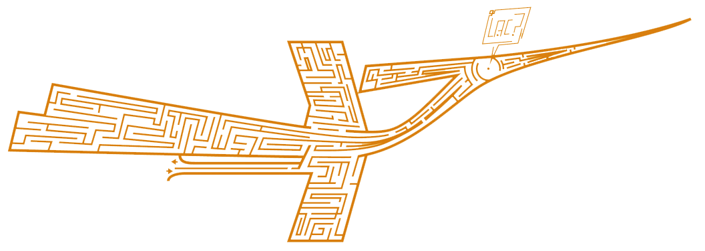

<aside class="left-sidebar animate__animated animate__backInRight"
	style="z-index: 100; position: fixed; top: 0;">
	<div>
		<div
			class="brand-logo d-flex align-items-center justify-content-between">
			<a class=" logo">  VIE_<b>SONET</b>
			</a>
		</div>
		<nav class="sidebar-nav scroll-sidebar" data-simplebar="init">
			<div class="simplebar-wrapper" style="margin: 0px -24px;">
				<div class="simplebar-height-auto-observer-wrapper">
					<div class="simplebar-height-auto-observer"></div>
				</div>
				<div class="simplebar-mask">
					<div class="simplebar-offset" style="right: 0px; bottom: 0px;">
						<div class="simplebar-content-wrapper"
							style="height: 100%; overflow: hidden;">
							<div class="simplebar-content" style="padding: 0px 24px;">
								<ul id="sidebarnav">
									<li class="nav-small-cap"><i
										class="ti ti-dots nav-small-cap-icon fs-4"></i> <span
										class="hide-menu">{{ 'chung' | translate }}</span></li>
										
									<li class="sidebar-item"><a class="sidebar-link" href="/index"
										aria-expanded="false"> <span> <i
												class="fa-sharp fa-regular fa-house"></i>
										</span> <span class="hide-menu">&nbsp;{{ 'home' | translate }}</span>
									</a></li>
									<li class="sidebar-item"><a class="sidebar-link" href="/search"
										aria-expanded="false"> <span> <i
												class="fa-regular fa-magnifying-glass"></i>
										</span> <span class="hide-menu">&nbsp; {{ 'TK' | translate }}</span>
									</a></li>
									<li class="sidebar-item"><a class="sidebar-link" href="/listFollow"
										aria-expanded="false"> <span> <i
												class="fa-light fa-handshake"></i>
										</span> <span class="hide-menu">&nbsp; {{ 'GY' | translate }}</span> 
									</a></li>
									<li class="sidebar-item"><a class="sidebar-link" href="/mess"
										aria-expanded="false"> <span> <i
												class="fa-regular fa-messages"></i>
										</span> <span class="hide-menu">&nbsp; {{ 'TN' | translate }}</span> <span class="badge" ng-show="check" style="background: red">{{unseenmess}}</span>
									</a></li>
									<li class="nav-small-cap"><i
										class="ti ti-dots nav-small-cap-icon fs-4"></i> <span
										class="hide-menu">{{ 'QL' | translate }}</span></li>
									<li class="sidebar-item"><a class="sidebar-link "
										href="#" aria-expanded="false"> <span> <svg
													class="svg-inline--fa fa-users" aria-hidden="true"
													focusable="false" data-prefix="far" data-icon="users"
													role="img" xmlns="http://www.w3.org/2000/svg"
													viewBox="0 0 640 512" data-fa-i2svg="">
                                                                <path
														fill="currentColor"
														d="M144 160A80 80 0 1 0 144 0a80 80 0 1 0 0 160zm368 0A80 80 0 1 0 512 0a80 80 0 1 0 0 160zM0 298.7C0 310.4 9.6 320 21.3 320H234.7c.2 0 .4 0 .7 0c-26.6-23.5-43.3-57.8-43.3-96c0-7.6 .7-15 1.9-22.3c-13.6-6.3-28.7-9.7-44.6-9.7H106.7C47.8 192 0 239.8 0 298.7zM405.3 320H618.7c11.8 0 21.3-9.6 21.3-21.3C640 239.8 592.2 192 533.3 192H490.7c-15.9 0-31 3.5-44.6 9.7c1.3 7.2 1.9 14.7 1.9 22.3c0 38.2-16.8 72.5-43.3 96c.2 0 .4 0 .7 0zM320 176a48 48 0 1 1 0 96 48 48 0 1 1 0-96zm0 144a96 96 0 1 0 0-192 96 96 0 1 0 0 192zm-58.7 80H378.7c39.8 0 73.2 27.2 82.6 64H178.7c9.5-36.8 42.9-64 82.6-64zm0-48C187.7 352 128 411.7 128 485.3c0 14.7 11.9 26.7 26.7 26.7H485.3c14.7 0 26.7-11.9 26.7-26.7C512 411.7 452.3 352 378.7 352H261.3z">
                                                                </path>
                                                            </svg> <!-- <i class="fa-regular fa-users"></i> -->
										</span> <span class="hide-menu">{{ 'ND' | translate }}</span>
									</a> <a class="sidebar-link" href="#" aria-expanded="false"> <span>
												<svg class="svg-inline--fa fa-memo-pad" aria-hidden="true"
													focusable="false" data-prefix="far" data-icon="memo-pad"
													role="img" xmlns="http://www.w3.org/2000/svg"
													viewBox="0 0 448 512" data-fa-i2svg="">
                                                                <path
														fill="currentColor"
														d="M400 128V448c0 8.8-7.2 16-16 16H64c-8.8 0-16-7.2-16-16V128H400zM64 0C28.7 0 0 28.7 0 64V448c0 35.3 28.7 64 64 64H384c35.3 0 64-28.7 64-64V64c0-35.3-28.7-64-64-64H64zM96 200c0 13.3 10.7 24 24 24H328c13.3 0 24-10.7 24-24s-10.7-24-24-24H120c-13.3 0-24 10.7-24 24zm0 96c0 13.3 10.7 24 24 24H328c13.3 0 24-10.7 24-24s-10.7-24-24-24H120c-13.3 0-24 10.7-24 24zm0 96c0 13.3 10.7 24 24 24H232c13.3 0 24-10.7 24-24s-10.7-24-24-24H120c-13.3 0-24 10.7-24 24z">
                                                                </path>
                                                            </svg> <!-- <i class="fa-regular fa-memo-pad"></i> -->
										</span> <span class="hide-menu"> &nbsp; &nbsp;{{ 'BV' | translate }}</span>
									</a> <a class="sidebar-link" href="#" aria-expanded="false"> <span>
												<svg class="svg-inline--fa fa-memo-circle-info"
													aria-hidden="true" focusable="false" data-prefix="far"
													data-icon="memo-circle-info" role="img"
													xmlns="http://www.w3.org/2000/svg" viewBox="0 0 576 512"
													data-fa-i2svg="">
                                                                <path
														fill="currentColor"
														d="M320 48H64c-8.8 0-16 7.2-16 16V448c0 8.8 7.2 16 16 16H284.5c12 18.4 27.4 34.5 45.3 47.3c-3.2 .5-6.4 .7-9.7 .7H64c-35.3 0-64-28.7-64-64V64C0 28.7 28.7 0 64 0H320c35.3 0 64 28.7 64 64V198.6c-17.2 4.9-33.4 12.3-48 21.8V64c0-8.8-7.2-16-16-16zM96 152c0-13.3 10.7-24 24-24H264c13.3 0 24 10.7 24 24s-10.7 24-24 24H120c-13.3 0-24-10.7-24-24zm24 72H264c13.3 0 24 10.7 24 24s-10.7 24-24 24H120c-13.3 0-24-10.7-24-24s10.7-24 24-24zm0 96h48c13.3 0 24 10.7 24 24s-10.7 24-24 24H120c-13.3 0-24-10.7-24-24s10.7-24 24-24zm312-96a144 144 0 1 1 0 288 144 144 0 1 1 0-288zm0 96a24 24 0 1 0 0-48 24 24 0 1 0 0 48zm-32 48c0 8.8 7.2 16 16 16h0v48h0c-8.8 0-16 7.2-16 16s7.2 16 16 16h16 16c8.8 0 16-7.2 16-16s-7.2-16-16-16V368c0-8.8-7.2-16-16-16H416c-8.8 0-16 7.2-16 16z">
                                                                </path>
                                                            </svg> <!-- <i class="fa-regular fa-memo-circle-info"></i> -->
										</span> <span class="hide-menu"> &nbsp;{{ 'BVVP' | translate }}</span>
									</a></li>
								</ul>
							</div>
						</div>
					</div>
				</div>
				<div class="simplebar-placeholder"
					style="width: auto; height: 312px;"></div>
			</div>
			<div class="simplebar-track simplebar-horizontal"
				style="visibility: hidden;">
				<div class="simplebar-scrollbar" style="width: 0px; display: none;"></div>
			</div>
			<div class="simplebar-track simplebar-vertical"
				style="visibility: hidden;">
				<div class="simplebar-scrollbar" style="height: 0px; display: none;"></div>
			</div>
		</nav>
	</div>
</aside>
